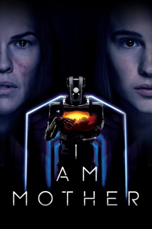

#12169 I Am Mother
 
 IMDB-Wertung: 6.8 / 10
IMDB-Wertung: 6.8 / 10  Tomatometer: 90
Tomatometer: 90  Metascore: 64
Metascore: 64 
Nachdem die Menschheit fast gänzlich ausgestorben ist, soll die Erde durch ein besonderes Programm neu bevölkert werden. Dafür wird eine neue Generation durch einen freundlichen Roboter namens „Mother“ großgezogen. Doch dann erscheint eine blutbesudelte Frau auf der Bildfläche und behauptet, das sei nur die halbe Wahrheit über das Schicksal der Menschheit…
Jahr: 2019
Dauer: 113 Minuten
FSK: 12
Land: Australien Studio: Concorde FilmverleihTonspuren: DTS - ,
Untertitel: Deutsch,
Auflösung: 1080p (1920x800) Größe: 8202 MB
Genre: Thriller, Horror, Drama, Sci-Fi
Regisseur: Grant Sputore
Drehbuch: Michael Lloyd Green, Grant Sputore
Soundtrack: Dan Luscombe, Antony Partos
Darsteller:
 Rose Byrne als Mother
Rose Byrne als Mother- Luke Hawker als Mother
- Tahlia Sturzaker als Child
- Clara Rugaard als Daughter
 Hilary Swank als Woman
Hilary Swank als Woman Johnny Carson als Himself (archive footage) (uncredited)
Johnny Carson als Himself (archive footage) (uncredited) Whoopi Goldberg als Herself (archive footage) (uncredited)
Whoopi Goldberg als Herself (archive footage) (uncredited) Steve Martin als Himself (archive footage) (uncredited)
Steve Martin als Himself (archive footage) (uncredited)- Maddie Lenton als Infant
- Summer Lenton als Toddler
- Hazel Sandery als Toddler
- Jacob Nolan als Brother
Datei: X:\2019(G-M)\I Am Mother (2019, FSK12, 1920x800).mkv seit 30.12.2019
Festplatte: HD 2018(G-Z)-2019(A-Z)
 Es gibt insgesamt 47 Filme in der Gruppe '2019(G-M)'
Es gibt insgesamt 47 Filme in der Gruppe '2019(G-M)'